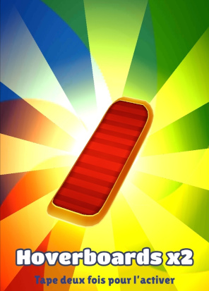
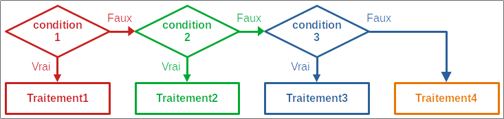
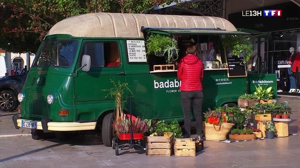
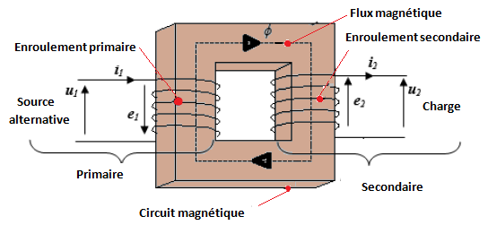
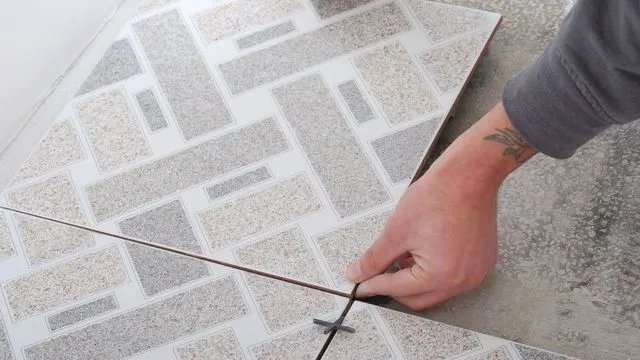
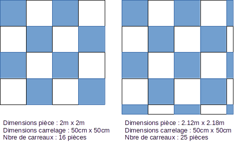
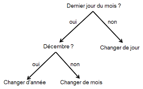
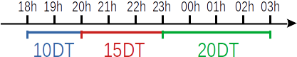
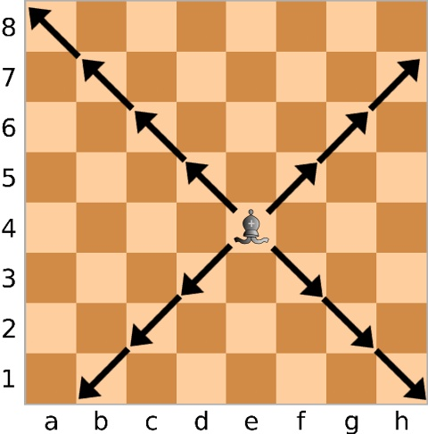

Dans un jeu, un joueur lance un dé deux fois. S'il obtient 6 deux fois successives il gagne 100 points, sinon
il obtient zéro.
L'algorithme correspondant est :
Algorithme dés
Début
de1 ← aléa(1, 6)
de2 ← aléa(1, 6)
Ecrire(de1, de2)
score ← 0
Si de1 = 6 et de2 = 6 Alors
score ← 100
Fin Si
Ecrire("Score = ", score)
Fin
Travail demandé
Dresser le TDO relatif à cet algorithme.
Identifier la structure conditionnelle dans cet algorithme.
Traduire l'algorithme en Python.
Jeu Pile/Face
Jeu Pile/Face
Pour choisir le possesseur du ballon au début d'un match de football, on procède au jeu Pile/Face.
Ce jeu est joué contre l'ordinateur de la façon suivante :
L'utilisateur fait son choix (0 : Pile et 1 : Face) chu
L'ordinateur fait le tirage au sort, choix d'un nombre au hasard 0 ou 1 cho
On affiche le gagnant :
Si chu est égal à cho l'Utilisateur gagne,
Si chu est différent de cho l'Utilisateur perd.
L'algorithme correspondant est comme suit :
Algorithme pile_face
Début
Ecrire("Votre choix ? ") ; Lire(chu)
cho ← aléa(0, 1)
Ecrire("Choix de l'ordinateur :", cho)
Si chu = cho Alors
Ecrire("L'utilisateur possède le ballon.")
Sinon
Ecrire("L'ordinateur possède le ballon.")
Fin Si
Fin
Travail demandé
Dresser le TDO relatif à cet algorithme.
Identifier la structure conditionnelle dans cet algorithme.
Traduire l'algorithme en Python.
Peut-on utiliser une structure conditionnelle à forme réduite dans cet exercice ? Proposer une
implémentation en Python de la solution.
Subway Surf

Bonus Subway Surf
Dans le jeu Subway Surf on peut gagner des boîtes mystères gratuites. Lorsqu'on clique sur le bouton
gratuit, l'ordinateur choisit une valeur aléatoire de 0 à 7 qui correspond à l'un des bonus suivants :
Si choix est égal à 0 on gagne 3 Insignes
Si choix est égal à 1 on gagne 800 pièces
Si choix est égal à 2 on gagne 3 Hoverboards
Si choix est égal à 3 on gagne 2000 pièces
Si choix est égal à 4 on gagne une clé
Si choix est égal à 5 on gagne un avantage de départ
Si choix est égal à 6 on gagne un booster de score
Si choix est égal à 7 on gagne 2 clés
L'algorithme correspondant est :
Algorithme Subway_surf
Début
code ← aléa(0, 7)
Si code = 0 Alors
cadeau ← "3 Insignes"
Sinon Si code = 1 Alors
cadeau ← "800 pièces"
Sinon Si code = 2 Alors
cadeau ← "3 Hoverboards"
Sinon Si code = 3 Alors
cadeau ← "2000 pièces"
Sinon Si code = 4 Alors
cadeau ← "Une clé"
Sinon Si code = 5 Alors
cadeau ← "Un avantage de départ"
Sinon Si code = 6 Alors
cadeau ← "un booster de score"
Sinon Si code = 7 Alors
cadeau ← "2 clés"
Fin Si
Ecrire("Cadeau = ", cadeau)
Fin
Travail demandé
Dresser le TDO relatif à cet algorithme.
Identifier la structure conditionnelle dans cet algorithme.
Traduire l'algorithme en Python.
Peut-on utiliser une structure conditionnelle à forme réduite dans cet exercice ? Proposer une
implémentation en Python de la solution.
Résumé
Structure conditionnelle à forme réduite
Une structure conditionnelle simple à forme réduite admet un seul traitement qui sera exécuté
uniquement si la condition est vraie.
Forme simple réduite
if condition:
traitements
Si condition Alors
traitements
Fin Si
Exemple
# Valeur absolue d'un nombre x
absx = x
if x < 0:
absx = -x
print("abs(", x, ")=", absx)
// Valeur absolue d'un nombre x
absx ← x
Si x < 0 Alors
absx ← -x
Fin Si
Ecrire("abs(", x, ")=", absx)
Structure conditionnelle à forme alternative
Une structure conditionnelle à forme alternative admet deux traitements différents :
Le premier traitement est exécuté uniquement si la condition est vraie,
Le second traitement est exécuté uniquement si la condition est fausse.
Forme simple alternative
if condition:
traitement1
else:
traitement2
Si condition Alors
traitement1
Sinon
traitement2
Fin Si
Exemple
# Maximum de deux nombres
if a > b:
max = a
else:
max = b
print("max=", max)
// Maximum de deux nombres
Si a > b Alors
max = a
Sinon
max = b
Fin Si
Ecrire("max=", max)
Structure conditionnelle à forme généralisée
Une structure conditionnelle simple à forme généralisée admet trois traitements différents
ou plus qui seront exécutés en fonction de plusieurs conditions.

Forme simple généralisée
if condition:
traitement1
elif condition2:
traitement2
else:
traitement3
Si condition1 Alors
traitement1
Sinon Si condition2 Alors
traitement2
Sinon
traitement3
Fin Si
Exemple
# Comparaison entre deux nombres
if a > b:
eq = ">"
elif a < b:
eq = "<"
else:
eq = "="
print(a, eq, b)
// Comparaison entre deux nombres
Si a > b Alors
eq ← ">"
Sinon Si a < b Alors
eq ← "<"
Sinon
eq ← "="
Fin Si
Ecrire(a, eq, b)
Un vendeur de poissons veut calculer le prix de vente de ses marchandises en fonction du prix d'achat.
Prix vente = Prix achat × (1 + gain / 100)
Sachant que :
gain = 20%, si 0 ≤ Prix achat < 15
gain = 25%, si 15 ≤ Prix achat < 30
gain = 35%, si 30 ≤ Prix achat
Ecrire l'algorithme d'un algorithme qui :
Saisit le nom du produit, variable np
Saisit le prix d'achat, variable pa
Calcule le gain en fonction du prix d'achat, variable g
Calcule le prix de vente en utilisant la formule ci-dessus, variable pv
Affiche le prix de vente
Calcul du prix de vente
==-==-==-==-==-==-==-==-==-==-==-==-==-==-==-
Quel est le nom du produit ? Sardines
Quel est le prix d'achat (DT) ? 5
Gain : 20 %
Prix de vente : 6.0 DT
Calcul du prix de vente
==-==-==-==-==-==-==-==-==-==-==-==-==-==-==-
Quel est le nom du produit ? Trilia
Quel est le prix d'achat (DT) ? 20
Gain : 25 %
Prix de vente : 25.0 DT
Vendeur ambulant ★

Vendeur ambulant
Un vendeur ambulant vend trois catégories d'articles dans un marché de la région.
Les prix respectifs de ces articles sont :
Catégorie A : 1DT/pièce
Catégorie B : 3DT/pièce
Catégorie C : 5DT/pièce
En fin de journée, ce vendeur veut savoir si ses ventes, de la journée, sont satisfaisantes ou non.
Le chiffre d'affaire des ventes ca est calculé de la façon suivante :
ca = na + nb × 3 + nc × 5
na, nb et nc étant le nombre d'articles
vendus
de chacune des catégories.
Le chiffre d'affaire est :
Satisfaisant, si ca ≥ 100
Bon, si 50 > ca ≥ 150
Mauvais, si ca < 100
Ecrire l'algorithme d'un algorithme qui :
Saisit le nombre d'articles de chaque catégorie na, nb, et nc.
Calcule le chiffre d'affaire ca en utilisant la formule ci-dessus.
Affiche le chiffre d'affaire de la journée.
Affiche s'il est satisfaisant, bon, ou mauvais.
Vendeur ambulant
==-==-==-==-==-==-==-==-==-==-==-==-==-==-==-
Indiquer le nombre d'articles de chaque catégorie :
Catégorie A ? 20
Catégorie B ? 12
Catégorie C ? 13
Le chiffre d'affaires de la journée : 121 DT
Le chiffre d'affaire est Satisfaisant
Vendeur ambulant
==-==-==-==-==-==-==-==-==-==-==-==-==-==-==-
Indiquer le nombre d'articles de chaque catégorie :
Catégorie A ? 35
Catégorie B ? 20
Catégorie C ? 20
Le chiffre d'affaires de la journée : 195 DT
Le chiffre d'affaire est Bon
Mon croissant ★
Croissants
Je suis dans une patisserie pour acheter des croissants. Le prix du croissant est 800 millimes/pièce.
J'achète un nombre de croissants, je paye et le caissier me rend la monnaie avant de quitter la patisserie.
Ecrire un algorithme pour simuler cette situation.
Nbre de croissants ? 5
Total = 800 × 5 = 4000
Votre argent ? 5000
Monnaie = 1000
Nbre de croissants ? 10
Total = 800 × 10 = 8000
Votre argent ? 5000
Manquant = 3000
Nbre de croissants ? 7
Total = 800 × 7 = 5600
Votre argent ? 6000
Monnaie = 400
Nbre de croissants ? 10
Total = 800 × 10 = 8000
Votre argent ? 8000
A bientôt
Cliquer sur le bouton suivant pour faire la simulation.
Nbre de croissants ?
{{qte}}
Total = 800 × {{qte}} = {{800*qte}}
Votre argent ?
{{argent}}
{{message}}.
Catégorie d'un transformateur ★
Un transformateur est un composant électrique utiliser pour isoler deux circuits électriques opérant sous
deux tensions différentes.
Il possède deux enroulements :
Le primaire avec une tension d'entrée U1
Le secondaire avec une tension de sortie U2

Schéma d'un transformateur
La tension du sortie du transformateur est calculée à l'aide de la formule :
U2 = U1 × r21
Il existe trois catégories de transformateurs dépedant du rapport de transformation r21 :
Si r21 > 1.03, le transformateur est élévateur
Si r21 < 0.97, le transformateur est abaisseur
Si 0.97 ≤ r21 ≤ 1.03, le transformateur est isolateur
Travail demandé
Ecrire l'algorithme d'un programme qui saisit les tensions d'entrée U1 et de sortie U2
d'un transformateur puis affiche sa catégorie.
L'immatriculation d'une voiture en Tunisie possède le format [num_ordre]TU[num_serie], exemple 9250TU60. On
veut comparer l'immatriculation de deux voitures afin de déterminer la voiture la plus vieille.
La voiture immatriculée 67TU220 est plus vieille que la voiture 1TU238
Ecrire l'algorithme d'un programme qui saisit l'immatriculation de deux voitures, puis affiche celle de la
plus vieille des deux.
Immatriculation voiture 1 ? 1TU240
Immatriculation voiture 2 ? 999TU202
999TU202 est plus vieille que 1TU240
Immatriculation voiture 1 ? 1001TU232
Immatriculation voiture 2 ? 15TU232
15TU232 est plus vieille que 1001TU232
Immatriculation voiture 1 ? 3600TU205
Immatriculation voiture 2 ? 3600TU205
Même matricule, même voiture.
Carrelage ★★
Un professionnel souhaite couvrir une chambre rectangulaire de parterre carré.
On demande d'écrire l'algorithme d'un programme qui saisit les dimensions de la chambre (longueur ×
largeur) ainsi que les dimensions du carrelage, puis détermine le nombre de pièces nécessaires pour carreler
la pièce.

Carrelage d'une chambre
NB : On ajoute un carreau lorsque l'espace restant est supérieur ou égal à 5 cm.

Calcul de nombre de carreaux pour carreler une chambre
Le jeu pierre / feuille / ciseaux est un jeu qui se joue à deux joueurs. Les deux joueurs doivent choisir en
même temps l'un des trois objets : Pierre, Feuille ou
Ciseaux.
La Pierre bat les Ciseaux
Les Ciseaux battent la Feuille
La Feuille bat la Pierre
On désire implémenter une version simplifiée de ce jeu où l'utilisateur joue contre l'ordinateur.
L'utilisateur :
choisit le nombre 0 pour l'objet Pierre.
choisit le nombre 1 pour l'objet Feuille.
choisit le nombre 2 pour l'objet Ciseaux.
L'ordinateur fait de même. La partie peut être nulle si les deux choisissent le même objet,
sinon l'un d'eux gagne selon les règles du jeu.
Ecrire un algorithme du jeu.
Jeu Pierre - Feuille - Ciseaux
Votre choix
0: Pierre/1: Feuille/2: Ciseaux ? 1
Feuille contre Pierre
Bravo, vous gagnez!
Jeu Pierre - Feuille - Ciseaux
Votre choix
0: Pierre/1: Feuille/2: Ciseaux ? 2
Ciseaux contre Pierre
Désolé, vous perdez!
Jeu Pierre - Feuille - Ciseaux
Votre choix
0: Pierre/1: Feuille/2: Ciseaux ? 1
Feuille contre Feuille
Match nul
Cliquer sur le bouton suivant pour faire la simulation.
On veut écrire un algorithme qui saisit une date sous forme jj/mm/aaaa, calcule et affiche la date du
lendemain.

Date du lendemain
On rappelle le nombre de jours des mois :
Janvier
Février
Mars
Avril
Mai
Juin
Juillet
Août
Septembre
Octobre
Novembre
Décembre
31
28
31
30
31
30
31
31
30
31
30
31
Entrer une date (jj/mm/aaaa) ? 31/12/2021
Lendemain = 1 / 1 / 2022
Entrer une date (jj/mm/aaaa) ? 28/02/2021
Lendemain = 1 / 3 / 2021
Heure après une tâche ★★
On veut calculer l'heure après l'exécution d'une tâche qui commence à une heure donnée au format
hh:mm et qui dure n minutes (n est un entier positif).
Ecrire l'algorithme d'un programme qui réalise ce calcul.
Heure début (hh:mm) ? 23:59
Durée (minutes) ? 2000
La tâche prend fin à 09:19, 2 jour(s) après
Heure début (hh:mm) ? 15:00
Durée (minutes) ? 30
La tâche prend fin à 15:30
Garde enfant ★★★
Garde enfant
Pour les parents qui sortent le soir, une garde offre pour eux ses services pour les prix suivants :
10DT par heure entre 18h et 20h
15DT par heure entre 20h et 23h
20DT par heure entre 23h et 03h

Prix de la garde enfant
On veut écrire un algorithme qui saisit l'heure d'arrivée d'un enfant dans la garde, puis l'heure de
l'arrivée
de ses parents pour le récupérer afin d'afficher le montant à payer.
Heure d'arrivée ? 18
Heure de départ ? 23
Le montant à payer 65 DT
Heure d'arrivée ? 21
Heure de départ ? 0
Le montant à payer 50 DT
Jeu d'échecs ★★★
Ecrire l'algorithme d'un programme qui saisit la position initiale d'un fou, sa direction de déplacement, et
le nombre de pas effectués, puis calcule et affiche la nouvelle position de la pièce sur l'échiquier.

Déplacement du fou
Le programme affiche :
"Position incorrecte", si la position choisie n'appartient pas à l'échiquier,
"Direction incorrecte", si la direction choisie est invalide,
"La pièce sort de l'échiquier", si le nombre de pas est trop grand,
La nouvelle position du fou, sinon.
Position fou ? e4
Direction (U:Up,D:Down,R:Right,L:Left) ? UL
Nombre pas ? 3
Nouvelle position : b7
Position fou ? x5
Direction (U:Up,D:Down,R:Right,L:Left) ? UR
Nombre pas ? 2
Position incorrecte
Position fou ? e4
Direction (U:Up,D:Down,R:Right,L:Left) ? DR
Nombre pas ? 5
La pièce sort de l'échiquier